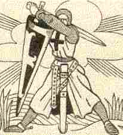

Gwreg ar C'hroazour

Ton
|
1.Keit a vin er brezel lec'h eo red din moned,
|
9.- Lâret din, plac'hig koant o peuriñ an deñved
Hag-eñ en maner-se 'c'hallfen bout kemeret ? - O ! Ya-sur, ma aotrou, degemer a kavet Hag ur marchosi kaer da lakaat ho roñsed 10.Ur gwele mat a bluñv ho pezo da gousket Eveldon-me gwechall pa oan gant ma pried Ne gousken ket neuze er c'hraou gant al loened Nag e skudell ar c'hi ne veze graet va boued 11.- Pelec'h eta, ma merc'h, pelec'h 'mañ ho pried Pa welan en ho torn liamm eus ho eured ? - Ma fried, va aotrou, a zo aet d'an arme Blev melen hir en doa, melen evel ho re 12.- Ma en doa blev melen kerkoulz eveldon-me Laket evezh, va merc'h, na vije me a ve ? - Ya, me eo ho itron, ho tous ha ho pried, Ma anv zo, e gwir, itron eus ar Faouet 13.- Lezet al loened-se ma yafemp d'ar maner Mall a zo ganin-me da erruout er gêr - Eurvat dit-te, va breur, eurvat dit a lâran Penaos 'ya ma fried am boa laosket amañ ? 14.- Aze'et-hu, va breur kadarn ha koant bepred ! Aet eo da Gemperle gant an itronezed Aet eo da Gemperle e-lec'h ma zo eured Pa zistroio d'ar gêr amañ a vo kavet 15.- Gaou a lârez din-me ! rak t'ac'h eus he c'haset Evel ur glaskerez da beuriñ al loened Gaou a lârez din-me e-kreiz da zaoulagad Rak emañ 'dreñv an nor, aze, oc'h huanad ! 16.Tec'h du-se gant ar vezh ! tec'h kuit, breur milliget ! Karget eo da galon a zroug hag a bec'hed ! Ma na ve ti ma mamm, ma na ve ti ma zad Ma 'lakefe va c'hle'eñv da ruilhañ gant da wad ! |
Premier carnet de collecte de La Villemarqué

|
P.112
(1) Mar 'z an-me d'an arme vel ma kontan (c'hoant) moned, Pelec'h e lakin-me va bried (dousig) da vired? - Degasit he d'am zi, va breurig, mar karit, Me he lako em gambr gant va dimezeled. (2) Peotramant er zal vras gant va itronezed E-barzh ar memez pod vo graet de'he o boued Hag ouzh ar memez taol e vezint azezet, Hag er memez gwelioù o-devo da gousked. (4) Ne oa ket aet pell-meur ermaes demeus an ti Ha voa laret dezhi kalz a proposoù kriz: (pe oa komañset da kana poul dezhi 'n em lakaz he mamm-gaer) - Diwiskit ho proz ruz hag unan gwenn (ho dilhad gloan) gwiskit! P.113 Vit a efec'h d'al lann da mired al loened. (5) - Salokras, va breur-kaer, penaoz a vezo graet? Me n'emaon bet biskoaz o mired an deñved. - Mar nemaoc'h bet biskoaz o mired an deñved, Amañ zo va wal gwenn a rayo d'ho moned. (6) Bet eo espas seizh vloaz ne ree nemed ouelañ. Paz echu ar seizh vloaz, hi gomañs da ganañ. Va denjentil yaouank o tistreiñ deus an arme, A glevas va vouez dous o kanañ er menez: (7) - Arrest, pajik bihan, krog er brid ar marc'h-mañ! Mar glevan ur vouezh kaer er menez o kanañ . Hirio a zo seizh bloaz m'er c'hleviz diwezhañ. (8-1) - Salud deoc'h, berjerenn, o mired an deñved, Ha c'hwi a zo gwerc'het d'an hini a garit? - O, ya sur!, emezi, fidel emaon bet, A drugarez Doue, hag e vihen bepred. Did you preserve yourself for the one whom you love? - Yes I did, so she said, I have been trustworthy, And, if God helps me so, forever I shall be. |
Garda-t-on sa vertu pour celui que l'on aime? - Oh oui, dit-elle, oui, fidèle je le fus Et le serai tant que Dieu me prêtera vie; P.114 (11-2) D'an denjentil yaouank a zo aet d'an arme Hag e-deus blev melen an-tu evit ho re. (12-1) - Mar en-deus bleo melen-gwenn henvel ouzh va re, Taolit evezh, plac'h yaouank, ne vez me eo a vez? (9) Larit din berjerenn o tiwal an deñved E-barzh ar maner-se ha me hallfe boud lakaet? - O ya sur, emezi,lojet-mat e vijec'h Ha va marchosi kaer da lakaat ho roñsed, (10-1) Va gwele mat a bluenn ho-pezo da gousked. Evidon-me da voud o mired an deñved, (12-2) Me zo c'hoazh ar vestrez war maner ar Faouet: Va ano a zo, sur, Markizez ar Faouet. (13-1) - O ya 'ta, berjerenn, dastumit an deñved, Evit mond asamblez d'ar maner ar Faouet. - Salokras, emezi, ha kredit n'ez in ket. Re uhel an heol hag e vin skandalet. Er c'hraou gant an deñved me a vez da gousked. Now, with your leave, she said, believe me, I won't go The sun is still too high and I shall be rebuked. In the crip with the sheep that's the place where I sleep. Sauf votre respect, dit-elle, croyez-moi, je n'irai point Le soleil est trop haut, j'ai peur qu'on ne me tance. La crêche des moutons, voilà ma seule couche. (2-2) - Ouzh an hevelep taol e vezint azezet.- (3-1) Benn un nebeud goude kaer vije da weled Porzh ar maner Faouet leun a zudjentiled Gante bep kroazik ruz, bep marc'h bras, bep banniel Evit klask an aotroù da voned d'ar brezel. |
P.115 (7-2)- Me glev ur vouezhig arc'hant o kanañ war menez Me gav em spered va dousik ez eo. Pell zo emaoc'h, berjerenn, o ... an deñved? (11) Berjerenn, din larit, pelec'h eo ho pried, Pa welan en ho torn al liamm ho eured? - Va bried, va aotroù, a zo aet d'an arme. E-devoa blev melen, aotroù, evel ho re. (12-2) - N'eo ket possubl-Doue, berjerenn, e ve me eo a ve!- (13-2) E-barzh ar ger pa e voa degouet, Da goul e bergerenn ez eo eñ aet (14-2) - Ho berjerenn, Aotroù, n'ho-po ket: (15-2) - Tri bloaz zo hi...o tiwall an deñved En eoc'h gant ar pemoc'h n'em lak da zebriñ boued, Er c'hraou gant an deñved me a vez da gousked. In a trough with the pigs I find whereon to feed In a crib with the sheep I find whereon to sleep. C'est dans l'auge aux cochons que m'attend ma pitance Et je passe mes nuits dans la crêche aux moutons. P; 202 (8) Bonjour deoc'h ta, Berjerenn, o tiwall an deñved, Evit dastum bleuñv balan da ober ur bouked Da Yannik mignon, va muioc'h karet. To gather broom blossoms and make a fine posy For Johnny, my dear friend, that I love tenderly. Et ces fleurs de genet feront un beau bouquet Pour mon ami Jeannot, lui que j'aime le plus. |
.
Les deux frères publiés dans "Les Derniers Bretons", Tome II, Chapitre "Poésies de Bretagne", p. 246 (1836) par Emile Souvestre
|
1. - Si je vais à la guerre, comme j'
en ai la volonté
, où mettrai-je ma femme, où laisserai-je ma chère amie?
- Envoyez-la dans ma maison, mon frère! Envoyez-la, si vous m'aimez! Et je la mettrai dans une chambre avec mes filles qui sont des filles nobles! - 4. Il n'était pas encore sorti du château , que tous, grands et petits, commencèrent à dire à la jeune femme; - Quittez votre robe rouge et mettez-en une blanche; mettez une robe de toile blanche pour aller dans les landes garder les moutons! - 6. Pendant sept ou huit ans la pauvre jeune femme ne fit que pleurer; mais après la huitième année, elle commença à chanter. Et un jeune gentilhomme qui revenait de l'armée, entendit une douce voix qui chantait dans les landes. |
7. - Tiens, jeune page, tiens la bride de mon coursier, car j'entends une douce voix dans les landes, et c'est la vois de ma chère aimée.
9. - Bonjour, jeune bergère; vous chantez bien joyeusement! Dites-moi, je vous prie, où pourrai-je trouver un lit et de la litière pour mon coursier? - Messire, allez chez mon beau-frère et vous serez logé; allez chez mon beau-fère, et vous trouverez de la litière pour votre coursier. 11. - Merci, jeune fille, mais, dites-moi, votre état est-il donc de garder les moutons ainsi? - Mon mari est à l'armée, et c'est pourquoi on m'a forcée de garder les moutons. C'était un beau jeune homme, mon mari, et il avait des cheveux blonds, des cheveux blonds comme les vôtres, messire. 12. - Regardez-moi bien, jeune femme, oh! regardez-moi bien, et prenez garde si vous me connaissez! |
13. Quand il arriva chez son frère, il dit: - Bonjour et joie dans cette maison: mon frère, où est ma femme que je vous avais confiée?
14. - Prenez un fauteuil et asseyez-vous, mon frère; votre femme est sortie, mais bientôt vous le reverrez. 15. - Non, dit l'homme de guerre, elle n'est pas sortie; mais je l'ai trouvée dans les landes qui gardait les moutons! 16. Honte à toi, mon frère! Si je ne respectais la maison de mon père et de ma mère, j'aurais lavé ton injustice dans ton sang.- C'est sans aucun doute ce qui a conduit La Villemarqué à ajouter la strophe 3, notée dans le MS de Keransquer (cf. en bas de la colonne 2 ci-dessus, en gras .) |